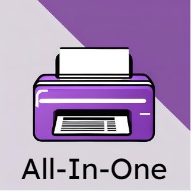

<!DOCTYPE HTML>
<html>

<head>
    <meta charset="UTF-8">
    <meta name="viewport" content="width=device-width, initial-scale=1.0">
    <link rel="stylesheet" href="css/main.css">
    <link rel="stylesheet" href="css/style.css">
    <link href="https://fonts.googleapis.com/css2?family=Lexend:wght@300;400;500;600;700&display=swap" rel="stylesheet">
    <link rel="stylesheet" href="https://cdnjs.cloudflare.com/ajax/libs/font-awesome/6.0.0-beta3/css/all.min.css">

</head>

<body>
    <!-- Sidebar -->
    <aside class="sidebar">
        <div class="logo">
            
        </div>
        <nav class="nav-menu">
            <a href="#" class="nav-item" onclick="navigateTo('dashboard.html')">
                
                <span>Dashboard</span>
            </a>

            <!-- Requests Dropdown -->
            <div class="dropdown" id="requestsMenu">
                <button class="dropbtn" onclick="toggleDropdown('requestsDropdown', 'requestsArrow')">
                    
                    <span>Requests</span>
                    
                </button>
                <div class="dropdown-content" id="requestsDropdown">
                    <!-- Apply option is visible only for roles other than Role 1 (e.g. Role 2, 3) -->
                    <a href="#" class="nav-subitem" id="applyOption"
                        onclick="navigateTo('WFHRequestForm.html')">Apply</a>

                    <a href="#" class="nav-subitem" id = "myrequestoption" onclick="navigateTo('WFHRequestsOverview_Staff.html')">My
                        Requests</a>

                    <!-- Team Requests - visibility based on role, redirects to different pages based on role -->
                    <a href="#" class="nav-subitem" id="teamRequestsOption" onclick="handleTeamRequestsClick()">Team
                        Requests</a>
                </div>
            </div>

            <!-- Schedules Dropdown -->
            <div class="dropdown">
                <button class="dropbtn" onclick="toggleDropdown('schedulesDropdown', 'schedulesArrow')">
                    
                    <span>Schedules</span>
                    
                </button>
                <div class="dropdown-content" id="schedulesDropdown">
                    <a href="#" class="nav-subitem" onclick="navigateTo('WFHCalendarStaff.html')">Calendars</a>
                    <a href="#" class="nav-subitem" id ="organizationScheduleoption"
                        onclick="navigateTo('WFHRequestsSchedules_Organization.html')">Organization</a>
                    <a href="#" class="nav-subitem" id="teamScheduleOption" onclick="navigateTo('WFHRequestsSchedules_SHRJack.html')">Team</a>
                </div>
            </div>

            <a href="#" class="nav-item" onclick="logout('login.html')">
                <i class="fa-solid fa-arrow-right-from-bracket" id="logouticon"></i>
                <span>Log Out</span>
            </a>
        </nav>
    </aside>

    <!--Menu Routing to pages script-->
    <script src="js/MenuRoute.js"></script>
    <!--Sidebar js functions-->
    <script src ="js/sidebar.js"></script>


</body>

</html>